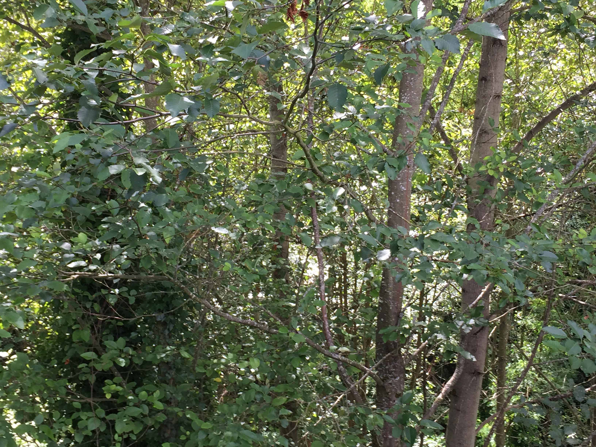
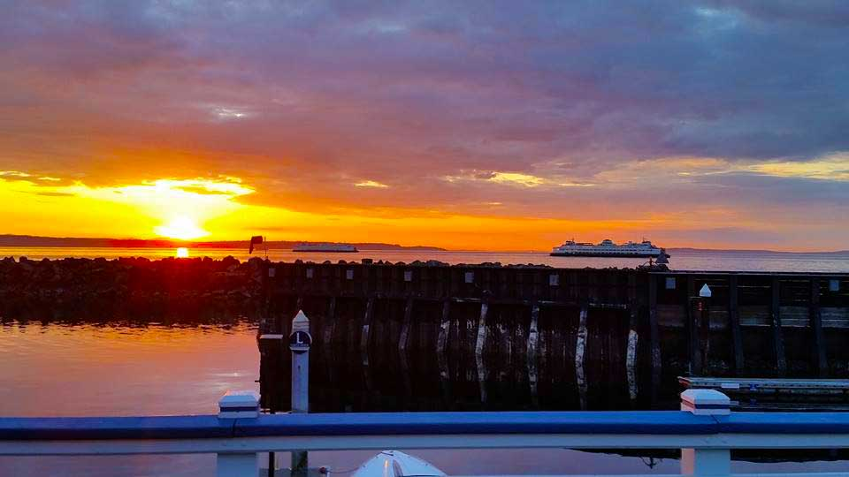

Color and Mood
Color is widely considered to have an effect on mood. This effect is, however quite subjective, being based on a person's experience or culture. For example, in Western cultere, white is seen to represent purity or innocence, but in many Eastern countries it is a symbol of mourning. (Cherry, 2015).
Color specialist Seatrice Eiseman ties our reaction to color to that color's tie to nature. In general, the reactions to color based on decades of research are: (Van Edwards, 2015)
- Green
- The color green is restful for eyes and produces the least amount of eyestrain. Green also reduces anxiety.
- Orange
- The color orange is stimilating and enthusiastic.
- Yellow
- Yellow is cheerful and bright. It is associated with nature, childhood, the sun, and happiness. (Boulton, 2014)
- Red
- The color red is passionate and energetic. In the East, it is associated with purity, good fortune, and sometimes divinity. (Boulton, 2014)
- Blue
- Blue is calming and stable. Workers in blue offices feel more centered, calm and hopeful. Blue can lower heart rate. Blue street lights appear to decrease the amount of crime in an area, and the number of suicide attempts. (The Yomiuri Shimbun, 2008)
- Black
- Black is aggressive. Statistics from more than 52,000 National Hockey League games have shown that teams were penalized more for aggresive behavior when wearing black jerseys. In the western world, black is the color of mourning, in many eastern countries white is the color of mourning. (Boulton, 2014)
- Grey
- Grey inspires people to be passive, uninvolved, and have a lack of energy.
Color Psychology as Therapy
Several ancient cultures, including the Egyptians and Chinese, used color to heal. This practice is called Chromotherapy, and is still used today as an alternative treatment. The colors and their uses are listed here: (Cherry, 2015)
- Red
- Stimulate the mind and increase circulation.
- Yellow
- Stimulate the nerves and purify the body.
- Orange
- Heal the lungs and increase energy levels.
- Blue
- Sooth illness and treat pain.
- Indigo
- Alleviate skin problems
Color Combinations
How colors are combined also has an effect on how the viewer reacts to them.
- Yellow
- Yellow is cheerful and bright. But, add red to it and the combination has an autumnal feeling. Add green to it and the combination is associated with disease and illness. When combined with black, yellow is the highest contrast color, which is why it is used in warning signs. (Boulton, 2014)
- Green
- Green is seen often in nature, being the color of photosynthesis, and tends to be calming by itself, but pair it with black or red and it can be very vibrant. (Boulton, 2014)
- Purple
- Purple is a royal color in the West, particularly paired with yellows and light lime greens. Combined with red and orange, purple produces a calmer effect than the two other colors by themselves. (Boulton, 2014)
Images and Mood Associations
This section presents three images, suggests some words to evoke the image mood, and defines and names a color palette to associate with it.
Lake Washington View
- #445544
- #6688bb
- #6699bb
- #77aaee
- #eeddcc
- Lake
This image makes me think of fresh, calm, sunny.
Forest View
- #555544
- #778866"
- #999966
- #999999
- #ccccaa
- Forest
This image makes me think of fresh, calm, cool.
Seaside View
- #443344
- #666699
- 997777
- #dd8844
- #eedd88
- Seaside
This image makes me think of fresh, thoughtful, energetic.
References
- Boulton, Mark. "Chapter Eighteen Colour Combinations and Mood." Chapter 18, Colour Combinations and Mood. Mark Boulton, 2014. Web. 08 Aug. 2015.
- Cherry, Kendra. "Color Psychology: Does Color Affect How You Feel?" About Education. About.com, n.d. Web. 05 Aug. 2015.
- Van Edwards, Vanessa. "10 Ways Color Affects Your Mood - Science of People." Science of People. Science of People, 17 Jan. 2013. Web. 08 Aug. 2015.
- The Yomiuri Shimbun. "Blue Streetlights Believed to Prevent Suicides, Street Crime." The Seattle Times. The Seattle Times, 11 Dec. 2008. Web. 08 Aug. 2015.